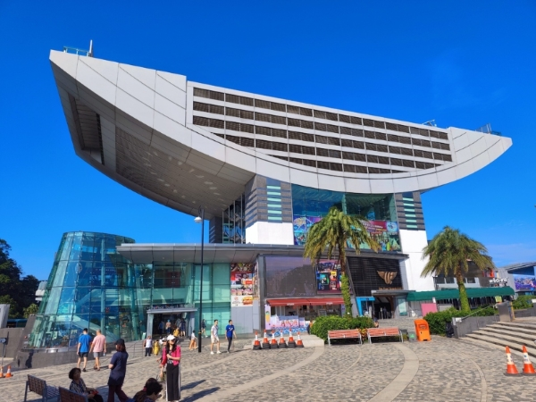
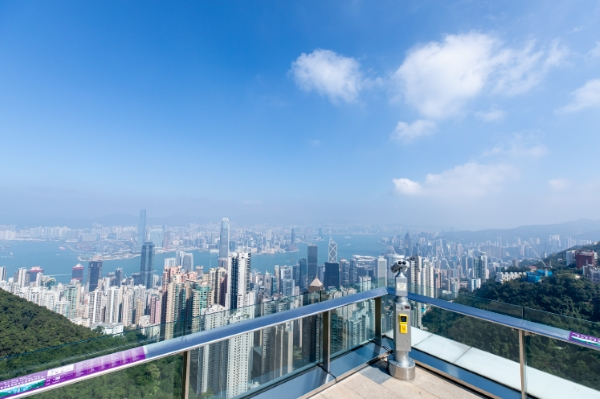

The Peak is a shopping complex located at Victoria Gap, near the summit of Victoria Peak on Hong Kong Island, Hong Kong. It also houses the upper terminal of the Peak Tram, a funicular railway. Both the Peak Tower and the Peak Tram are owned by the Hongkong and Shanghai Hotels group, the owner of Hong Kong's Peninsula Hotel and other properties. The tower and tram are jointly promoted by the collective branding known as The Peak.
 